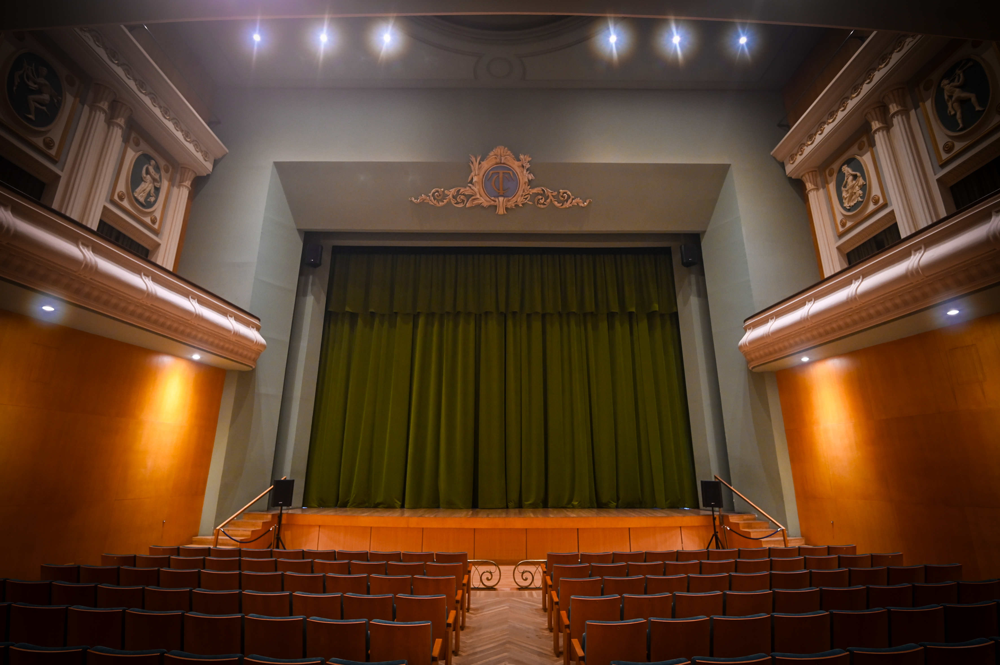
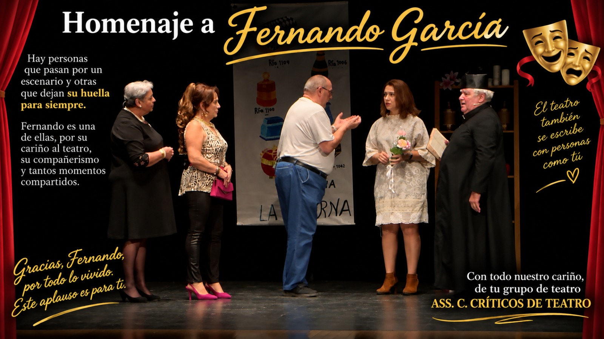
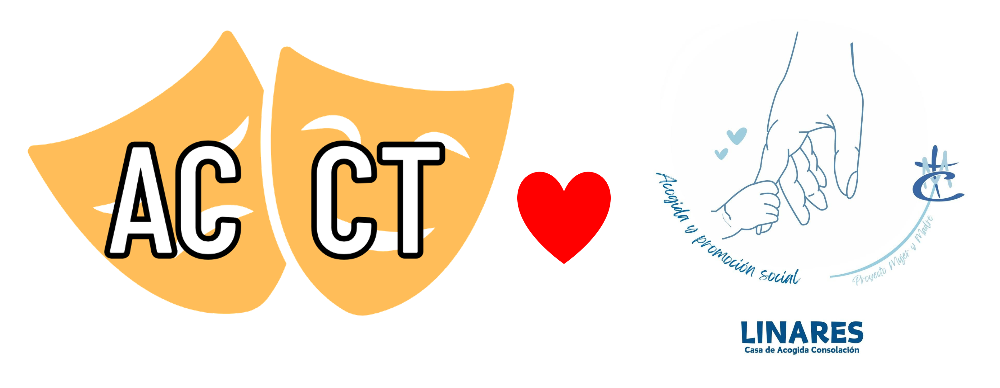

Noticias



28 Aug 2026
Donación solidaria
La A.C Los Críticos de Teatro participará en una nueva iniciativa cultural con fines solidarios.
Leer más →


La A.C Los Críticos de Teatro participará en una nueva iniciativa cultural con fines solidarios.
Leer más →